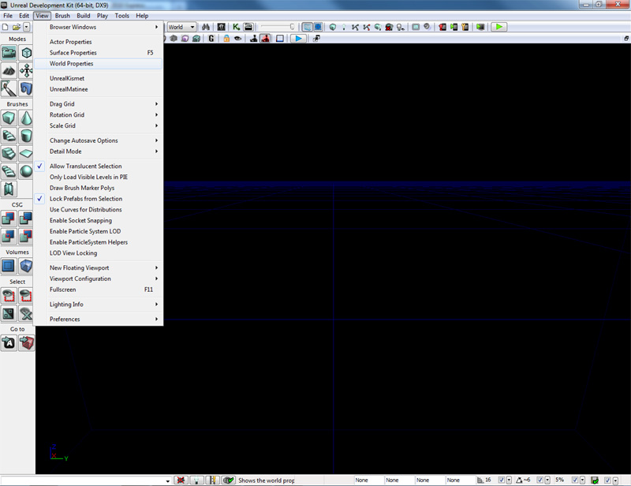
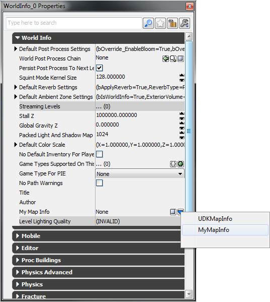
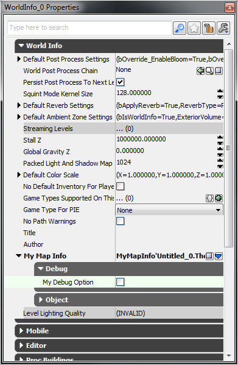
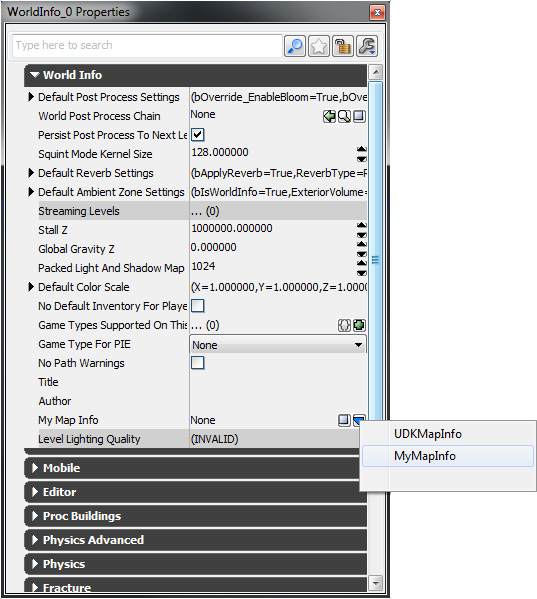
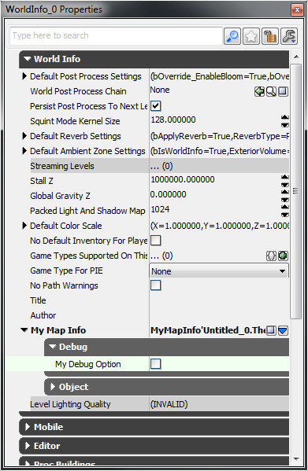

UDN
Search public documentation:
DevelopmentKitGemsAddingMapSpecificDebuggingOptions
日本語訳
中国翻译
한국어
Interested in the Unreal Engine?
Visit the Unreal Technology site.
Looking for jobs and company info?
Check out the Epic games site.
Questions about support via UDN?
Contact the UDN Staff
中国翻译
한국어
Interested in the Unreal Engine?
Visit the Unreal Technology site.
Looking for jobs and company info?
Check out the Epic games site.
Questions about support via UDN?
Contact the UDN Staff
UE3 Home > Unreal Development Kit Gems > Adding map specific debugging options
Adding map specific debugging options
Last tested against UDK May, 2011
PC and iOS compatible
Overview
Sometimes it's not always possible to access the Unreal console easily to debug your project during development. This is especially true on the mobile platforms such as the iOS. This shows you a map specific way for to toggle options on and off.
MapInfo method
By using MapInfo to store debugging data, all content creators can easily change debugging options. The debugging option here is shown as a boolean that can either be turned on or off, but you can use any kind of variable type you want. The benefits to using this method is that it is map specific, so you can flag a set of debug options for a map that has known issues. The downsides is that when the map is started, the map info is instanced and you won't be able to change the flags on the fly. A static function is used here so that it's simple to retrieve the value of the debug options easily. The function works by finding the WorldInfo instance, which is done by using the native static function found in WorldInfo. If the WorldInfo instance is found, the MyMapInfo instance is found by type casting the returned MapInfo instance from GetMapInfo(). If the MyMapInfo instance is found, it then returns MyDebugOption.
class MyMapInfo extends MapInfo;
var(Debug) bool MyDebugOption;
static function bool IsDebuggingOptionOn()
{
local WorldInfo WorldInfo;
local MyMapInfo MyMapInfo;
// Get the WorldInfo instance statically
WorldInfo = class'WorldInfo'.static.GetWorldInfo();
if (WorldInfo != None)
{
// Get the MyMapInfo instance
MyMapInfo = MyMapInfo(WorldInfo.GetMapInfo());
if (MyMapInfo != None)
{
// Return the value of MyDebugOption
return MyMapInfo.MyDebugOption;
}
}
// Can't get an instance to WorldInfo or MyMapInfo, so return a default value
return false;
}
defaultproperties
{
}
How to implement in Unrealscript
Using the debugging option is as simple as calling the static function.
if (class'MyMapInfo'.static.IsDebuggingOptionOn())
{
Canvas.SetPos(0, 0);
Canvas.SetDrawColor(255, 0, 255);
Canvas.Font = class'Engine'.static.GetTinyFont();
Canvas.DrawText("Debugging mode enabled");
}
How to use in Unreal Editor
Open up the World Properties window by selecting View -> World Properties in the main window.  The World Properties actor properties window is now open. From here click the blue arrow in the My Map Info section. This will bring up a context menu.
 Click on MyMapInfo (or whatever else you've called your MapInfo class) to create the new MapInfo actor.

Set the debugging options. When you start your level in PIE, and if the programmers have implemented debugging support, you will be able to easily tweak and debug your level and or game.

Click on MyMapInfo (or whatever else you've called your MapInfo class) to create the new MapInfo actor.

Set the debugging options. When you start your level in PIE, and if the programmers have implemented debugging support, you will be able to easily tweak and debug your level and or game.
